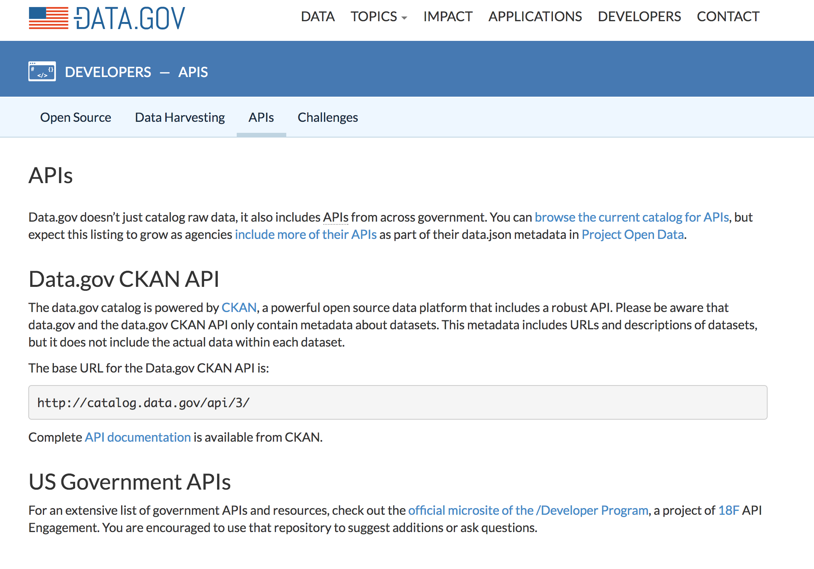

scraping/etc. open data in R
Scott Chamberlain (@sckottie/@ropensci)
UC Berkeley / rOpenSci

scotttalks.info/oddpdx
exploring
data . gov is on CKAN
Wikipedia clients
http
the clients
async
scraping
scraping: parsing data DIY
html => xml2
xml => xml2
json => jsonlite
csv/tsv/etc => readr /
data.table::fread